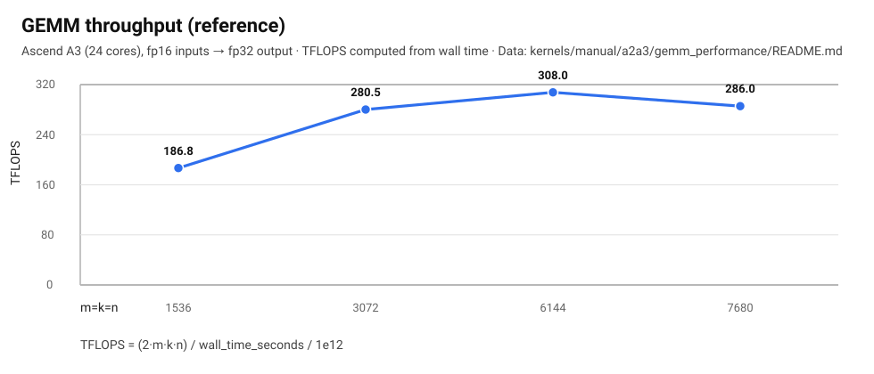
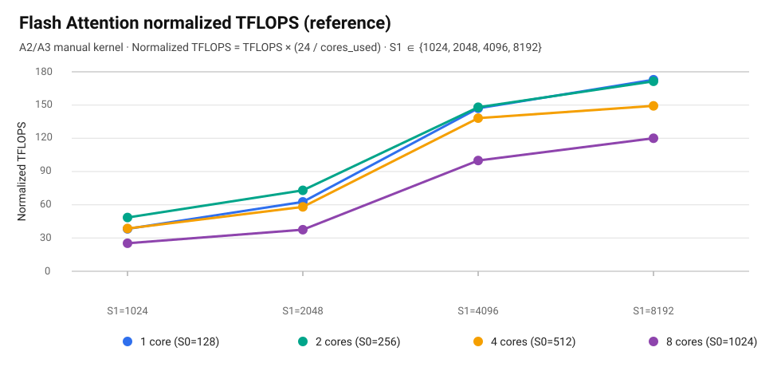

PTO Tile Library¶
PTO（Parallel Tile Operation）是昇腾 CANN 定义的一套面向 tile 的虚拟 ISA。本仓库提供 PTO Tile 指令的高性能实现与配套工具链：把算子/框架映射到 PTO 指令序列后，可以更平滑地在不同昇腾代际之间迁移与复用。
新闻¶
- 2025-12-27：PTO Tile Library 正式开源发布。
概览¶
PTO ISA 基于昇腾底层硬件与软件抽象，定义 90+ 条标准 tile 指令。
昇腾硬件架构随代际演进发生了显著变化，导致指令集也产生了较大差异。PTO 指令集通过提升抽象层级来桥接这些差异。我们保证在固定 tile shape 下，这些 PTO 指令能够跨平台正确工作并保持向后兼容。同时，这种抽象并不会屏蔽性能调优空间：用户仍然可以通过调整 tile size、tile shape、指令顺序等进行精细化优化，从而对内部流水线具备足够控制力。
目标是在提升抽象层级的同时保留调参空间：既方便跨代迁移，也不牺牲性能优化手感。
目前，PTO 指令已集成到以下框架中：
- PyPTO
- TileLang Ascend
- 更多语言与前端持续完善中
本仓库的目标用户¶
PTO Tile Lib 并不面向入门级用户，主要面向：
- 直接对接昇腾硬件的框架后端开发者
- 跨平台应用开发者
- 高性能算子开发者（手工实现算子/内核）
性能¶
本仓库包含面向性能的 kernels，并给出参考测量数据与可复现的实验设置。性能测试工具，请参考msprof工具。
GEMM（A2/A3 参考）¶
- Kernel：
kernels/manual/a2a3/gemm_performance/
在 Ascend A3（24 核）上测量（fp16 输入 → fp32 输出）：
| 参数 | TMATMUL（Cube）占比 | TEXTRACT 占比 | TLOAD 占比 | TSTORE 占比 | 执行时间（ms） |
|---|---|---|---|---|---|
m=1536 k=1536 n=1536 |
54.5% | 42.2% | 72.2% | 7.7% | 0.0388 |
m=3072 k=3072 n=3072 |
79.0% | 62.0% | 90.9% | 5.8% | 0.2067 |
m=6144 k=6144 n=6144 |
86.7% | 68.1% | 95.2% | 3.1% | 1.5060 |
m=7680 k=7680 n=7680 |
80.6% | 63.0% | 98.4% | 2.4% | 3.1680 |
详细分析与调参说明：高性能 GEMM 算子示例。

Flash Attention（A2/A3 参考）¶
- Kernel：
kernels/manual/common/flash_atten/
详细分析与调参说明：Flash Attention 算子实现。
- S0：query 序列长度（Q/O 的行数）
- S1：key/value 序列长度（K/V 的行数）

路线图（Roadmap）¶
未来计划发布的特性：
| 功能 | 描述 | 范围 |
|---|---|---|
| PTO Auto Mode | BiSheng 编译器支持：自动分配 tile buffer 并插入同步。 | 编译器 / 工具链 |
| PTO Tile Fusion | BiSheng 编译器支持：自动融合 tile 操作。 | 编译器 / 工具链 |
| PTO-AS | PTO ISA 的字节码（Byte Code）支持。 | 编译器 / 工具链 |
| 卷积扩展 | PTO ISA 对卷积 kernel 的支持。 | ISA 扩展 |
| 集合通信扩展 | PTO ISA 对集合通信 kernel 的支持。 | ISA 扩展 |
| 系统调度扩展 | PTO ISA 对 SPMD/MPMD 编程的调度支持。 | ISA 扩展 |
如何使用 PTO Tile Library¶
PTO 指令支持两种模式：Auto Mode（仅在 CPU 仿真中可用）（无需手动分配 buffer/管理流水线），以及 Manual Mode（需要显式管理 buffer 地址与流水线）。推荐按以下路径推进算子优化：
- 基于 Auto Mode 开发算子，根据算法逻辑生成 PTO 指令序列。示例见 demos/auto_mode/baseline/add
- 在 CPU 仿真中验证功能与正确性（见：运行 CPU Simulator）。
- 将代码移植到昇腾硬件上验证正确性并采集性能数据。参见 msprof工具。
- 定位性能瓶颈（CUBE Bound / MTE Bound / Vector Bound），开始优化与调参。参见 性能优化
每条 PTO 指令会在固定 tile shape 下映射到对应的底层实现（通常由模板与静态选择完成）。通过组合不同 PTO 指令并调整 tile 参数/顺序，可以做端到端的性能调优。
本仓库也展示了标准 tile 操作如何通过模板参数映射到不同流水线实现：
- 静态 tile shape（Row/Col）：Tile 编程模型
- 动态 tile mask（valid mask）：Tile 编程模型
- 事件记录与等待（set/wait flag）：事件与同步、通用约定
- 专用固定功能（SFU）
- 固定流水线（FIXP）
PTO ISA 定义了 90+ 条标准操作，参见PTO指令列表。本仓库实现了其中不断增长的一部分，并持续补充更多指令实现。
平台支持¶
- Ascend A2（Ascend 910B）
- Ascend A3（Ascend 910C）
- Ascend A5（Ascend 950）
- CPU（x86_64 / AArch64）
更多细节请参考：include/README_zh.md
快速开始¶
更详细、分操作系统的环境配置（Windows / Linux / macOS），请参考：docs/getting-started_zh.md。
构建文档（MkDocs）¶
本仓库在 docs/mkdocs/ 下提供完整的 API 文档和 ISA 指令参考，使用 MkDocs（Material 主题）构建。文档内容包括：
- 完整的 PTO ISA 指令参考
- API 使用指南与示例
- 性能调优指南
- 架构与设计文档
选项 1：访问在线文档（推荐）¶
访问文档中心获取最新文档。
选项 2：本地构建文档¶
如果需要离线访问、正在修改文档或想查看未发布的功能，可以本地构建文档。
前置条件¶
- Python >= 3.8
- pip（Python 包管理器）
方法 1：使用 MkDocs CLI 快速开始¶
- 安装 MkDocs 及依赖：
python -m pip install -r docs/mkdocs/requirements.txt
- 选择以下选项之一：
选项 A：本地运行文档服务器（用于开发/预览）¶
python -m mkdocs serve -f docs/mkdocs/mkdocs.yml
文档将在 http://127.0.0.1:8000 可访问。服务器会监听文件变化并自动重新加载。按 Ctrl+C 停止服务器。
选项 B：构建静态 HTML 站点（用于离线使用/部署）¶
python -m mkdocs build -f docs/mkdocs/mkdocs.yml
输出将位于 docs/mkdocs/site/。在浏览器中打开 docs/mkdocs/site/index.html 即可查看。
方法 2：通过 CMake 构建（高级）¶
此方法适用于 CI/CD 流水线或将文档构建集成到开发工作流中。
- 创建 Python 虚拟环境（推荐）：
python3 -m venv .venv-mkdocs
source .venv-mkdocs/bin/activate # Windows: .venv-mkdocs\Scripts\Activate.ps1
python -m pip install -r docs/mkdocs/requirements.txt
- 使用 CMake 配置和构建：
cmake -S docs -B build/docs -DPython3_EXECUTABLE=$PWD/.venv-mkdocs/bin/python
cmake --build build/docs --target pto_docs
Windows (PowerShell)：
cmake -S docs -B build/docs -DPython3_EXECUTABLE="$PWD\.venv-mkdocs\Scripts\python.exe"
cmake --build build/docs --target pto_docs
构建的文档将位于 build/docs/site/。
运行 CPU Simulator（建议第一步）¶
CPU 仿真跨平台，不依赖昇腾驱动/CANN：
python3 tests/run_cpu.py --clean --verbose
构建并运行 GEMM demo（可选）：
python3 tests/run_cpu.py --demo gemm --verbose
构建并运行 Flash Attention demo（可选）：
python3 tests/run_cpu.py --demo flash_attn --verbose
运行单个 ST 测试用例¶
运行 ST 需要可用的昇腾 CANN 环境，通常仅在 Linux 上使用。
python3 tests/script/run_st.py -r [sim|npu] -v [a3|a5] -t [TEST_CASE] -g [GTEST_FILTER_CASE]
说明：a3 后端覆盖 A2/A3 系列（include/pto/npu/a2a3）。
示例：
python3 tests/script/run_st.py -r npu -v a3 -t tmatmul -g TMATMULTest.case1
python3 tests/script/run_st.py -r sim -v a5 -t tmatmul -g TMATMULTest.case1
运行推荐的测试集¶
# 在项目根目录下执行：
chmod +x ./tests/run_st.sh
./tests/run_st.sh a5 npu simple
./tests/run_st.sh a3 sim all
运行 CPU 仿真测试¶
# 在项目根目录下执行：
chmod +x ./tests/run_cpu_tests.sh
./tests/run_cpu_tests.sh
python3 tests/run_cpu.py --verbose
构建 / 运行说明¶
配置环境变量（Ascend CANN）¶
例如使用 CANN 社区包并安装到默认路径：
-
默认路径（root 安装）
bash source /usr/local/Ascend/cann/bin/setenv.bash -
默认路径（非 root 用户安装）
bash
source $HOME/Ascend/cann/bin/setenv.bash
如果安装到 install-path，可使用：
source ${install-path}/cann/bin/setenv.bash
一键构建与运行¶
- 运行完整 ST 测试：
bash
chmod +x build.sh
./build.sh --run_all --a3 --sim
- 运行精简 ST 测试：
bash
chmod +x build.sh
./build.sh --run_simple --a5 --npu
- 打包：
bash
chmod +x build.sh
./build.sh --pkg
文档¶
- ISA 指南与导航：docs/README_zh.md
- ISA 指令索引：docs/isa/README_zh.md
- 开发者文档索引：docs/coding/README_zh.md
- 入门指南（建议先 CPU，再 NPU）：docs/getting-started_zh.md
- 安全与披露流程：SECURITY_zh.md
-
分目录阅读（代码组织）：
-
构建与打包（CMake）：cmake/README_zh.md
- 对外头文件与 API：include/README_zh.md、include/pto/README_zh.md
- NPU 实现（按 SoC 拆分）：include/pto/npu/README_zh.md、include/pto/npu/a2a3/README_zh.md、include/pto/npu/a5/README_zh.md
- Kernel / 自定义算子：kernels/README_zh.md、kernels/custom/README_zh.md
- 测试与用例：tests/README_zh.md、tests/script/README_zh.md
- 打包脚本：scripts/README_zh.md、scripts/package/README_zh.md
仓库结构¶
include/：PTO C++ 头文件（见 include/README_zh.md）kernels/：自定义算子与 kernel 实现（见 kernels/README_zh.md）docs/：ISA 指令、API 指南与示例（见 docs/README_zh.md）tests/：ST/CPU 测试脚本与用例（见 tests/README_zh.md）scripts/：打包与发布脚本（见 scripts/README_zh.md）build.sh、tests/run_st.sh：构建、打包与示例运行入口
许可证¶
本项目基于 CANN Open Software License Agreement Version 2.0 进行许可。详情见根目录下的 LICENSE 文件。